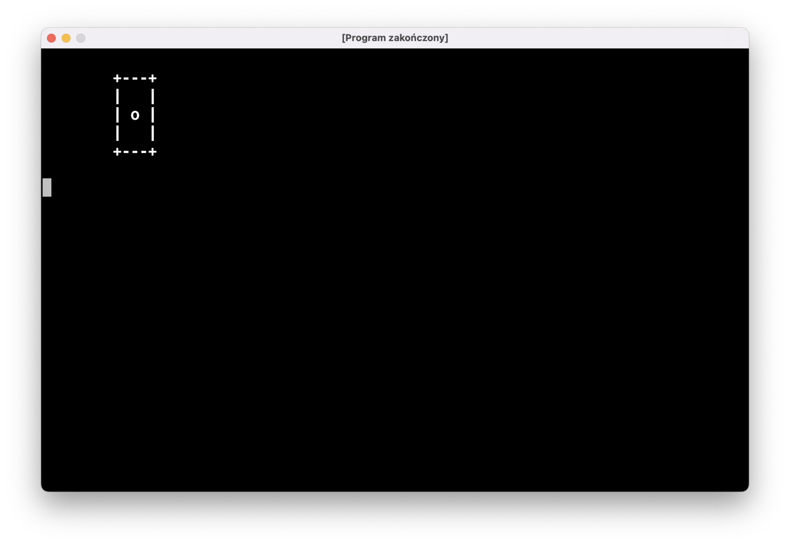
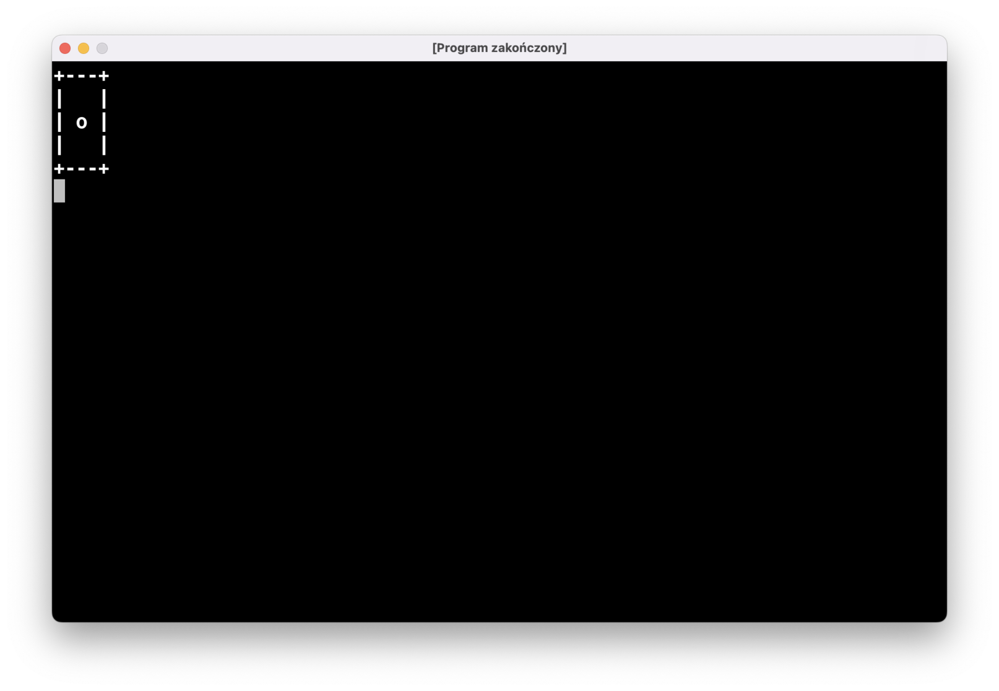
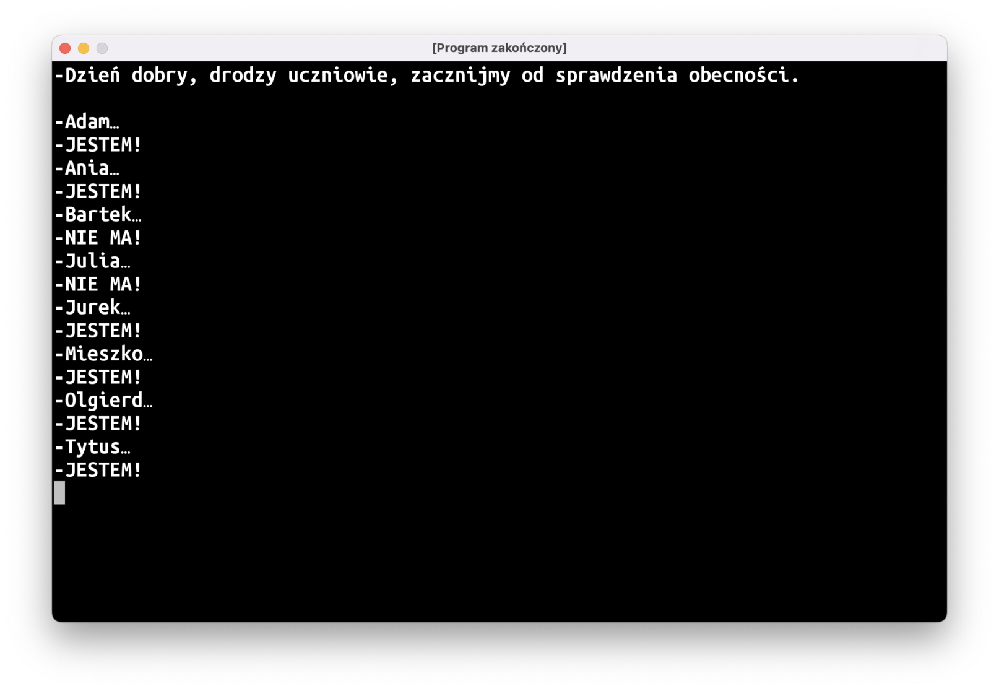
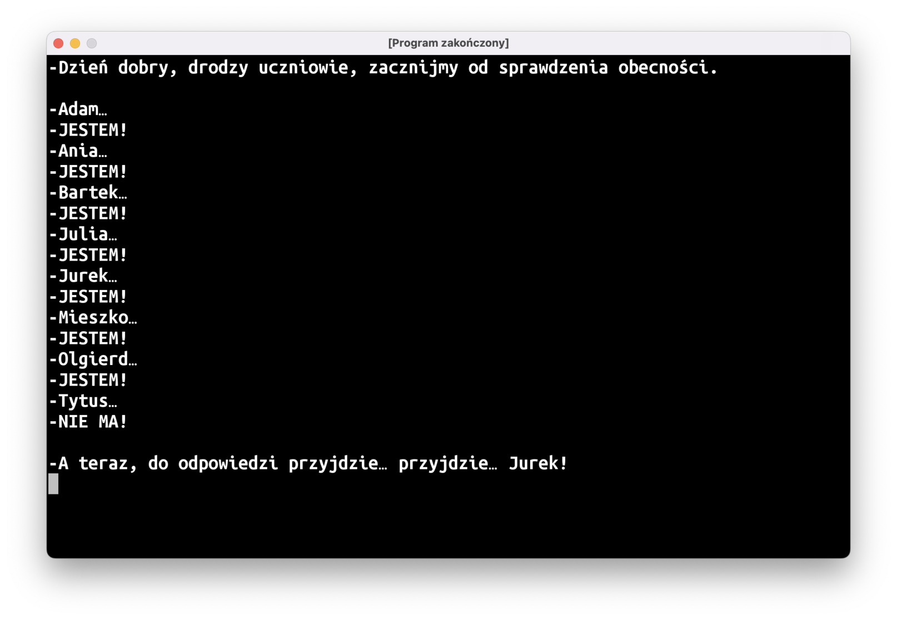
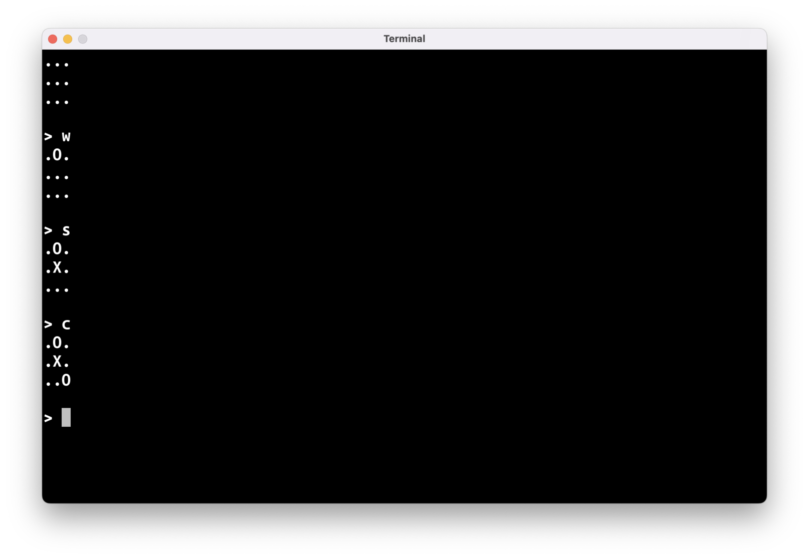
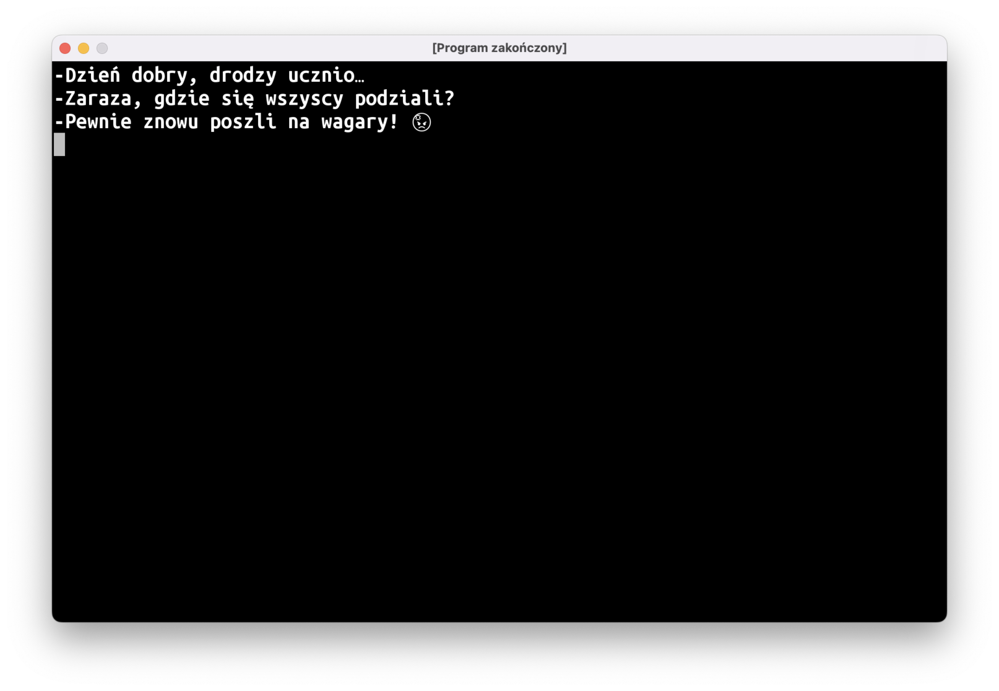
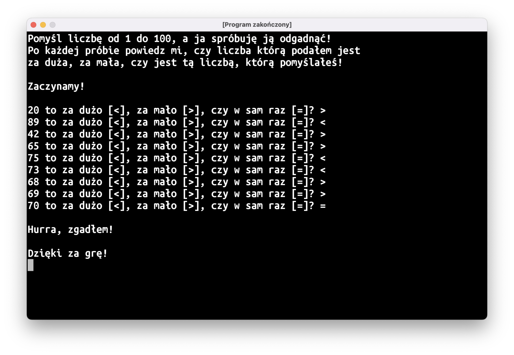
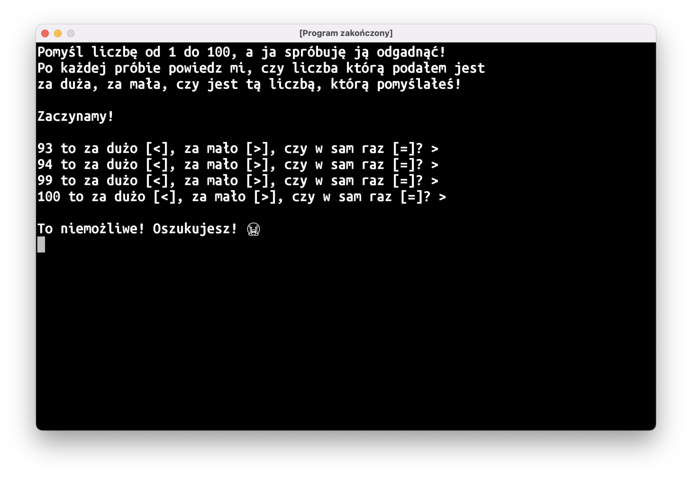
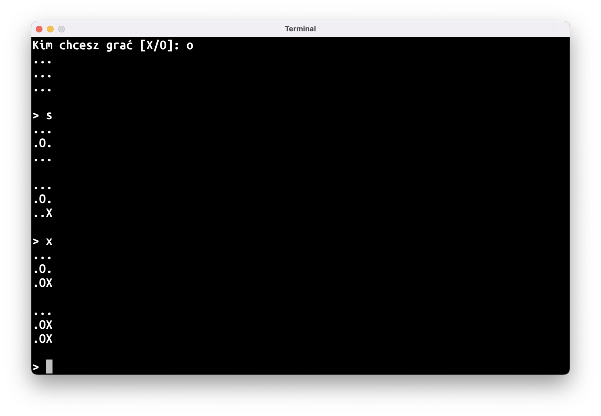

Teksty wielolinijkowe
Przypuszczam, że większość z was napisała zadany na ostatnich zajęciach program “Kostka do gry” mniej-więcej w ten sposób:
fun rysujKostkę(oczka: Int) {
when (oczka) {
1 -> {
println("+---+")
println("| |")
println("| o |")
println("| |")
println("+---+")
}
// itd.
}
}
Zwykłe teksty tworzone w kodzie, "taki jak ten", muszą zaczynać się i kończyć w tej samej linii. Tekst ograniczony z dwóch stron potrójnym cudzysłowem """ może obejmować kilka linii:
fun rysujKostkę(oczka: Int) {
when (oczka) {
1 -> {
println(
"""
+---+
| |
| o |
| |
+---+
"""
)
}
// itd.
}
}
Problem natomiast jest taki, że wcięcia w kodzie, użyte po to, aby nasz kod był czytelniejszy, będą pomieszane ze wcięciami w naszym wielolinijkowym tekście. Chcielibyśmy, aby nasza kostka wyrysowana została przy lewej krawędzi ekranu, ale zamiast tego otrzymamy taki efekt:

Żeby tego uniknąć, możemy dodać w naszym tekscie lewą “granicę” przy użyciu znaczka | i użyć metody trimMargin(), która “dotnie” tekst do tych znaczników:
fun rysujKostkę(oczka: Int) {
when (oczka) {
1 -> {
println(
"""
|+---+
|| |
|| o |
|| |
|+---+
""".trimMargin()
)
}
// itd.
}
}

Listy
Zanim będziemy w stanie napisać kolejne gry, musimy poznać pierwszą, podstawową strukturę danych: listę.
Na szczęście, jest to dość intuicyjne pojęcie: mamy kilka rzeczy, i jeśli poukładamy je w kolejności, otrzymamy właśnie listę. W codziennym życiu znajdziecie dużo takich przykładów: lista zakupów, lista obecności w dzienniku, lista lekcji na waszym planie zajęć, itd., itp.
Kotlinowe listy tworzymy przy użyciu funkcji listOf(…).
val uczniowie = listOf<>()
Pojawi się tutaj coś dziwnego: IntelliJ będzie bardzo chciał, żebyśmy napisali coś wewnątrz “trójkątnych nawiasów”, utworzonych ze znaków mniejszości i większości. Chodzi o to, że funkcja listOf() będzie tworzyła listę, ale musimy powiedzieć, czym będą elementy tej listy: czy będą to liczby, tekst, albo jeszcze coś innego. Na naszej liście będziemy zamieszczać imiona uczniów, będzie to zatem lista tekstów, a więc listOf<String>().
val uczniowie = listOf<String>(
"Adam",
"Ania",
"Bartek",
"Julia",
"Jurek",
"Mieszko",
"Olgierd",
"Tytus",
)
Po dodaniu imion <String> zmieni kolor na szary: IntelliJ daje nam w ten sposób znać, że teraz już sam się domyśla, jaki jest typ elementów na liście i można tę informację usunąć.
Podstawowe operacje na listach
// ilość elementów na liście
println(uczniowie.size) // 8
// n-ty element z listy wyciągamy operatorem []
println(uczniowie[1]) // Ania
// przy czym elementy numerowane są od 0!
println(uczniowie[0]) // Adam
println(uczniowie[2]) // Bartek
// zakres poprawnych indeksów, których możemy użyć z operatorem []
println(uczniowie.indices) // 0..7
// wybranie losowej osoby z listy
println(uczniowie.random())
// sprawdzenie, czy element znajduje się na liście
println(uczniowie.contains("Krzysztof")) // false, bo nie mamy Krzyśka na liście
println(uczniowie.contains("Adam")) // true, bo Adam jak najbardziej jest
// wypisze wszystkich uczniów jedno pod drugim
for (uczen in uczniowie) {
println(uczen)
}
“Lista Obecności”
Czas na rozgrzewkę przed trudniejszym wyzwaniem: napiszmy program, który wypisuje tekst, który wygląda jak dialog nauczyciela z uczniami. Dla każdego ucznia na będziemy “rzucać kostką”: jeśli wypadnie jedno oczko, oznacza to, że uczeń jest nieobecny; inny wynik oznacza, że uczeń jest obecny:

“Rzut kostką” to oczywiście losowanie liczby z przedziału 1..6 przy użyciu fun IntRange.random(): Int, tak jak w “Zgaduli”. Po sprawdzeniu obecności nauczyciel może wywołać kogoś do odpowiedzi:

List vs MutableList
Jeśli wykonamy nasz program w obecnej formie, może dojść do krępującej sytuacji: nauczyciel może wywołać do odpowiedzi nieobecną osobę. Moja propozycja na rozwiązanie tego problemu to utworzenie drugiej listy, do której będziemy dodawać tylko obecnych uczniów.
Jeśli zdefiniujemy tę drugą listę jako val obecni = listOf<String>(), czeka nas przykra niespodzianka: nie znajdziemy żadnej metody w stylu add, insert, ani nic takiego.
W Kotlinie standardowe listy są “stałe”, nie można zmieniać ich zawartości po ich utworzeniu. Jeśli potrzebujemy listy, którą będzie można w dowolny sposób zmieniać w dalszej części programu, musimy stworzyć inny obiekt: mutableListOf<String>(). Nie chodzi tu o żadne mutanty z horrorów z trzecią ręką wyrastającą z pleców, po prostu “mutable” oznacza po angielsku “zmienny”. Ten podział na zmienne/niezmienne struktury danych może wydawać wam się dziwny, ale jest to bardzo dobry pomysł, który zapobiega wielu rodzajom błędów.
Posłużę się kolejnym porównaniem: zwykła, niezmienna List to jak kamienna tablica z wyrytymi napisami: raczej ciężko zmienić ich zawartość. “Zmienialna” MutableList jest jak pociąg: można doczepić do niego więcej wagonów, albo jakieś odczepić, można też zmienić zawartość wagonu.
Ważne jest też to, że mutowalność (bądź niemutowalność) listy nie ma nic wspólnego z tym, czy nasza lista jest przypisana do zmiennej, czy stałej:
val list = listOf(…): kamienne tablice z metkąvar list = listOf(…): pudełko na kamienne tabliceval list = mutableListOf(…): pociąg z metkąvar list = mutableListOf(…): pudełko na pociągi
Do MutableList możemy dodawać elementy metodą add():
val obecni = mutableListOf<String>()
obecni.add("Krzysztof Jarzyna")
A przy użyciu operatora [] możemy zmieniać ich zawartość:
val superLiczby = mutableListOf(1, 2, 3, 4)
superLiczby[0] = 42 // po tej zmianie lista będzie zawierać liczby 42, 2, 3, 4
“Kółko i Krzyżyk”
Pora na prawdziwe wyzwanie: grę w kółko i krzyżyk!

Da się ten program napisać, wykorzystując tylko to, czego nauczyliśmy się do tej pory, ale najprawdopodobniej nie macie pojęcia jak się za to zabrać. Proponuję podzielić pracę na następujące kroki:
- Stan gry
- Pseudokod
- Puste funkcje
- Integracja
- Wypełnianie dziur
Stan gry, czyli model danych
Zastanówmy się, jakiego typu danych będziemy używać do przechowywania stanu gry. Przy grze w kółko i krzyżyk musimy jakoś zapisać dwie rzeczy:
- Co jest na planszy
- Kto jest aktywnym graczem
Proponuję, aby planszę zapisać na 9-elementowej liście Stringów (nie jest to najbardziej odpowiednia struktura danych, ale na razie nie poznaliśmy mechanizmów języka, które pozwoliłyby nam lepiej rozwiązać ten problem), zawierających "X", "O", albo "." (dla pustego pola). Będziemy zmieniać zawartość tej listy, więc trzeba użyć MutableList.
val plansza = mutableListOf<String>()
// dodajemy dziewięć "." reprezentujących puste pola na planszy
for (i in 1..9) {
plansza.add(".")
}
Będziemy musieli zdecydować które elementy naszej listy odpowiadają poszczególnym polom na planszy. W zasadzie nie ma większego znaczenia, jaki obierzemy system, ale dobrze by było, gdyby był on choć trochę intuicyjny: będzie łatwiej nam później napisać resztę programu. Proponuję obrać następującą numerację:
0 | 1 | 2
---+---+---
3 | 4 | 5
---+---+---
6 | 7 | 8
Czyli stan lewego górnego pola będziemy trzymali w pierwszym elemencie naszej listy (o indeksie 0), prawe pole będzie miało ma indeks 5, a dolne - 7.
Aktywnego gracza też możemy trzymać jako String: "X" albo "O".
var tura = "O"
Pseudokod
Gwoli przypomnienia: pseudokod to tekstowy opis programu poszczególnych kroków programu. Na podstawie screenshota, dla gry “Kółko i Krzyżyk” można stworzyć następujący pseudokod:
// narysuj planszę
// wczytaj z klawiatury ruch gracza
// nanieś ruch na planszę
Te trzy rzeczy powinny powtarzać się do końca gry:
// powtarzaj:
// narysuj planszę
// wczytaj z klawiatury ruch gracza
// nanieś ruch na planszę
// doputy, dopóki gra się nie skończyła
Musimy też pamiętać o tym, że ludzie mogą wpisać z klawiatury dziwne rzeczy:
// powtarzaj:
// narysuj planszę
// wczytaj z klawiatury ruch gracza
// jeśli wczytany ruch jest prawidłowy
// nanieś ruch na planszę
// doputy, dopóki gra się nie skończyła
Na koniec wypadałoby wypisać wynik:
// powtarzaj:
// narysuj planszę
// wczytaj z klawiatury ruch gracza
// jeśli wczytany ruch jest prawidłowy
// nanieś ruch na planszę
// doputy, dopóki gra się nie skończyła
// wypisz wynik
Puste funkcje
W naszym pseudokodzie znajdują się dość ogólnikowe stwierdzenia, jak np.: “narysuj planszę”. Będziemy potrzebowali do tego kilku instrukcji, więc żeby nie zawalać sobie funkcji main, proponuję stworzenie osobnej funkcji narysujPlansze(plansza: List<String>). Dzięki temu kod naszego maina stanie się dużo czytelniejszy: będzie przypominał pseudokod, a wszystkie szczegóły i szczególiki będą zamknięte w osobnej funkcji. Na razie nie będziemy pisać wnętrza (czyli inaczej ciała funkcji), stworzymy tylko pusty “szkielet” funkcji, który będziemy wypełniać później:
fun narysujPlansze(plansza: List<String>) {
}
Podobnie postąpimy z kolejnymi funkcjami. W przypadku funkcji, które powinny coś zwracać, dodamy w ciele funkcji pojedynczy return z byle jaką wartością – tylko tyle, żeby IntelliJ nie bazgrał nam na czerwono.
Idąc dalej tym tropem, powinniśmy też stworzyć funkcję wczytajRuch(). Nazwa tej funkcji sugeruje, że powinniśmy z niej zwrócić “ruch”, który chce wykonać aktywny gracz (podobnie jak readln(), czyli z angielskiego read line, wczytuje linię i zwraca ją). Proponuję, żeby reprezentować “ruch gracza” jako Int, odpowiadający indeksowi danego pola na naszej liście plansza:
0 | 1 | 2
---+---+---
3 | 4 | 5
---+---+---
6 | 7 | 8
Jak zawsze, gdy wczytujemy tekst z klawiatury, musimy być gotowi na to, że użytkownicy wpiszą jakieś totalne bzdury. W takich przypadkach nasza funkcja wczytajRuch() może zwrócić null, a więc zwracanym typem powinien być opcjonalny Int?:
fun wczytajRuch(): Int? {
return null
}
Kolejna rzecz do zrobienia to sprawdzenie poprawności ruchu i naniesienie go na planszę. Można to zawrzeć w jednej funkcji: wykonajRuch(ruch: Int?, plansza: MutableList<String>, gracz: String): String. Jeśli ruch jest poprawny i został naniesiony na planszę, powinniśmy zmienić aktywnego gracza. Do tego właśnie służyć będzie wartość zwracana z tej funkcji.
fun wykonajRuch(ruch: Int?, plansza: MutableList<String>, gracz: String): String {
return gracz
}
Najtrudniejszą funkcją do napisania w naszym programie będzie sprawdzenie wyniku gry: wynik(plansza: List<String>): String?. Znów mamy do czynienia z opcjonalnym typem zwracanym: niech nasza funkcja zwraca "X" bądź "O" w przypadku wygranej jednego z graczy, "." jeśli będzie remis, albo null, jeśli gra jeszcze nie została rozstrzygnięta:
fun wynik(plansza: List<String>): String? {
return null
}
Ostatnia funkcja, która będzie nam potrzebna, służyć będzie do wypisania wyniku gry:
fun wypiszWynik(plansza: List<String>) {
}
Integracja
Kolejnym krokiem jest sprawdzenie, jak wszystkie wymyślone przez nas funkcje łączą się w całość i czy niczego nam nie brakuje. Na tym etapie powinniśmy mieć mniej-więcej coś takiego:
fun main() = terminal {
// ---------- KROK 1: STAN GRY -----------
val plansza = mutableListOf<String>()
for (i in 1..9) {
plansza.add(".")
}
var tura = "O"
// ---------- KROK 2: PSEUDOKOD ----------
// powtarzaj:
// narysuj planszę
// wczytaj z klawiatury ruch gracza
// jeśli wczytany ruch jest prawidłowy
// nanieś ruch na planszę
// doputy, dopóki gra się nie skończyła
// wypisz wynik
}
// ---------- KROK 3: PUSTE FUNKCJE ----------
fun narysujPlansze(plansza: List<String>) {
}
fun wczytajRuch(): Int? {
return null
}
fun wykonajRuch(ruch: Int?, plansza: MutableList<String>, gracz: String): String {
return gracz
}
fun wynik(plansza: List<String>): String? {
return null
}
fun wypiszWynik(plansza: List<String>) {
}
Możemy zacząć zastępować pseudokod prawdziwym kodem. “Powtarzaj czynność, dopóki jakiś warunek jest spełniony” to tekstowy opis pętli do…while:
do {
// narysuj planszę
// wczytaj z klawiatury ruch gracza
// jeśli wczytany ruch jest prawidłowy
// nanieś ruch na planszę
} while (wynik(plansza) == null)
// wypisz wynik
Ustaliliśmy wcześniej, że funkcja wynik(…) będzie zwracać null dla gry, która nie została jeszcze rozstrzygnięta, więc “gra trwa dalej” to wynik(plansza) == null.
Parę innych linijek pseudokodu też da się dość łatwo zastąpić wywołaniem pojedynczej funkcji:
do {
narysujPlansze(plansza)
val ruch = wczytajRuch()
// jeśli wczytany ruch jest prawidłowy
// nanieś ruch na planszę
} while (wynik(plansza) == null)
wypiszWynik(plansza)
Ostatni kawałek pseudokodu może być troszkę trudniejszy do zastąpienia. Obydwie rzeczy – sprawdzenie poprawności ruchu i naniesienie go na planszę – załatwiane są przez jedną funkcję wykonajRuch. Ponadto, “naniesienie ruchu na planszę” powinno też zmienić aktywnego gracza. Dlatego też nasza funkcja wykonajRuch zwraca informację, czyja będzie następna tura i musimy tę wartość przypisać do zmiennej tura.
do {
narysujPlansze(plansza)
val ruch = wczytajRuch()
tura = wykonajRuch(ruch, plansza, tura)
} while (wynik(plansza) == null)
wypiszWynik(plansza)
Wypełnianie dziur
Funkcja main jest gotowa, musimy “tylko” 😬 napisać kod pozostałych funkcji.
Każdą funkcję możecie potraktować jako osobny, mały programik i przechodzić przez ten sam proces, co w przypadku głównego programu: zaczynamy od pseudokodu, tworzymy pomocnicze funkcje (jeśli będzie taka potrzeba), a na końcu zastępujemy pseudokod prawdziwym kodem.
Możecie chcieć przetestować jakąś drobniejszą część programu, np.: tylko funkcję narysujPlansze. Najprostszym sposobem na zrobienie tego będzie zmiana nazwy obecnej funkcji main na coś innego i napisanie nowego maina, zawierającego tylko to, co chcemy sprawdzić:
fun main() = terminal {
val plansza = mutableListOf<String>()
for (i in 1..9) {
plansza.add(".")
}
narysujPlansze(plansza)
}
// stara funkcja main ze zmienioną nazwą
fun xo() = terminal {
// dwa i pół kilo kodu
}
fun narysujPlansze(plansza: List<String>) {
// kolejne pół kilo kodu
}
Rysowanie planszy
Programowanie bywa kłopotliwe, ponieważ nawet najprostsze czynności trzeba bardzo precyzyjnie wytłumaczyć. Dla człowieka polecenie “narysuj planszę do gry w kółko i krzyżyk” jest proste i oczywiste, dla komputera jest to niezrozumiałe i niewykonalne. Musimy wytłumaczyć po kolei. Każdy. Najmniejszy. Kroczek.
fun narysujPlansze(plansza: List<String>) {
// narysuj lewe-górne pole
// narysuj górne pole
// narysuj prawe-górne pole
// przejdź do następnej linijki
// narysuj lewe pole
// narysuj środkowe pole
// narysuj prawe pole
// przejdź do następnej linijki
// narysuj lewe-dolne pole
// narysuj dolne pole
// narysuj prawe-dolne pole
// przejdź do następnej linijki
}
“Przejdź do następnej linijki” to println(). “Narysuj jakieśtam pole” to wypisanie jednego elementu z listy metodą print(). Musicie tylko pamiętać sposób indeksowania pól, który przyjęliśmy wcześniej:
0 | 1 | 2
---+---+---
3 | 4 | 5
---+---+---
6 | 7 | 8
Jeśli chcecie upchnąć to samo w mniejszej liczbie linijek kodu, możecie użyć szablonów tekstu, albo tekstów wielolinijkowych, ale prosta seria printów i println‘ów też zrobi robotę.
Wczytanie ruchu
Wczytanie ruchu z klawiatury to oczywiście readln(). Podobnie jak musieliśmy przyjąć jakiś system indeksowania elementów na planszy, musimy przyjąć jakiś zestaw komend do sterowania naszą grą. Proponuję wybrać jakiś w miarę kwadratowy obszar na klawiaturze (np.: literki qweasdzxc, albo klawiaturę numeryczną z prawej strony, jeśli ktoś ma pełną klawiaturę w swoim laptopie) i przypisać jedną literkę do jednego pola planszy:
q | w | e 0 | 1 | 2
---+---+--- ---+---+---
a | s | d => 3 | 4 | 5
---+---+--- ---+---+---
z | x | c 6 | 7 | 8
Czyli literka q odpowiadać będzie lewemu-górnemu rogowi planszy. Nasz pseudokod będzie wyglądał następująco:
fun wczytajRuch(): Int? {
// wczytaj tekst z klawiatury
// jeśli wczytany tekst
// to literka q, to zwróć indeks lewego-górnego pola planszy
// to literka w, to zwróć indeks górnego pola planszy
// …
// w przeciwnym razie to nie może być poprawny ruch, więc zwróć null
}
Można też dodać szczyptę println() i print()‘ów, żeby poprawić wygląd naszej gry.
Wykonanie ruchu
Wczytaliśmy ruch, mamy indeks pola, które wybrał gracz (lub null, jeśli wpisał głupoty), musimy teraz zająć się naniesieniem ruchu na planszę i zwróceniem informacji czyj będzie następny ruch:
fun wykonajRuch(ruch: Int?, plansza: MutableList<String>, gracz: String): String {
// jeśli gracz wpisał jakieś bzdury
// nie zmieniamy tury i od razu kończymy tę funkcję
// jeśli gracz próbuje postawić swój znaczek na zajętym polu
// nie zmieniamy tury i od razu kończymy tę funkcję
// jeśli gracz próbuje postawić swój znaczek na pustym polu
// wstawiamy tam jego znaczek
// zmieniamy turę na drugiego gracza
}
“Nie zmieniamy tury i kończymy funkcję” to po prostu return gracz. “Zmiana tury na drugiego gracza” to if…else, który zwróci "X", jeśli obecnym graczem jest "O" i vice versa.
Sprawdzenie wyniku
To chyba najtrudniejsza funkcja w naszym programie, postarajmy się więc rozbić ją na drobniutkie kroczki:
fun wynik(plansza: List<String>): String? {
// jeśli ktoś wygrał, zwróć jego symbol
// ok, doszedłem do tego miejsca w kodzie, czyli nikt nie wygrał
// w takim razie albo jest remis, albo gra toczy się dalej
}
Pamiętajcie, że komputer potrafi wykonać miliardy operacji w ciągu sekundy, ale nie wykazuje się żadną inicjatywą ani samodzielnym myśleniem. “Jeśli ktoś wygrał” musimy rozbić na super drobne kroczki:
fun wynik(plansza: List<String>): String? {
// jeśli ktoś postawił trzy takie same znaczki w górnym rządku, zwróć jego symbol
// jeśli ktoś postawił trzy takie same znaczki w środkowym rządku, zwróć jego symbol
// jeśli ktoś postawił trzy takie same znaczki w dolnym rządku, zwróć jego symbol
// jeśli ktoś postawił trzy takie same znaczki w lewej kolumnie, zwróć jego symbol
// jeśli ktoś postawił trzy takie same znaczki w środkowej kolumnie, zwróć jego symbol
// jeśli ktoś postawił trzy takie same znaczki w prawej kolumnie, zwróć jego symbol
// jeśli ktoś postawił trzy takie same znaczki w przekątnej \, zwróć jego symbol
// jeśli ktoś postawił trzy takie same znaczki w przekątnej /, zwróć jego symbol
// ok, doszedłem do tego miejsca w kodzie, czyli nikt nie wygrał
// w takim razie albo jest remis, albo gra toczy się dalej
}
Oczywiście “jeśli ktoś postawił trzy takie same znaczki w górnym rządku” też jest dla komputera zbyt abstrakcyjnym zdaniem, trzeba to rozbić jeszcze bardziej:
// jeśli:
// lewy górny symbol, prawy górny symbol i górny symbol są takie same
// i nie jest to "." (bo sprawdzamy, czy ktoś postawił tam "X" albo "O")
// to zwróć ten symbol.
W Kotlinie nie można porównać naraz trzech wartości, musimy więc rozbić to na dwa porównania i połączyć je operatorem &&:
// jeśli:
// (górny symbol == lewy górny symbol) &&
// (górny symbol == prawy górny symbol) &&
// (górny symbol != ".")
// to zwróć górny symbol
Myślę, że z takim pseudokodem do warunków wygranej powinniście dać sobie radę.
Weźmy na warsztat drugą część pseudokodu: sprawdzenie, czy jest remis, czy gra toczy się dalej. Można spróbować to rozbić na dwa sposoby:
- “Gra toczy się dalej, jeśli na planszy jest jakieś puste pole”
- “Gra zakończyła się remisem, jeśli wszystkie pola na planszy są zajęte i gra nie zakończyła się wygraną”
Zdecydowanie prostsza do napisania będzie pierwsza wersja:
// popatrz po kolei na wszystkie pola
// jeśli pole jest puste
// gra toczy się dalej
Tak więc pseudokod naszej funkcji finalnie będzie wyglądał następująco:
fun wynik(p: List<String>): String? {
// sprawdzę, czy ktoś wygrał
// …
// 8 długaśnych warunków zwycięstwa
// …
// ok, doszedłem do tego miejsca w kodzie, czyli nikt nie wygrał
// popatrz po kolei na wszystkie pola planszy
// jeśli pole jest puste
// gra toczy się dalej, zwróć null
// gra się zakończyła, ale nikt nie wygrał
// w takim razie jest remis
}
Jeśli doczytaliście do tego momentu, wyślijcie do mnie na Slacku wiadomość o treści “Żyrafy wchodzą do szafy”.
Zmieniłem też nazwę parametru funkcji na p: zazwyczaj jestem zwolennikiem dłuższych nazw, które lepiej opisują obiekt, ale w tym przypadku kod będzie dużo czytelniejszy, jeśli użyjemy krótkiej, jednoliterowej nazwy.
Podsumowanie
- Możemy zdefiniować wielolinijkowy tekst przy użyciu potrójnych
":"""tekst""". W przeciwieństwie do zwykłego tekstu taki tekst może zawierać znaki nowej linii. - Żeby zapobiec wymieszaniu się wcięcia kodu i wcięcia tekstu w wielolinijkowym tekście, możemy dodać znaki lewego marginesu
|i użyć funkcji.trimMargin(). - Lista obiektów to
List<…>, można ją utworzyć funkcjąlistOf(). Typ podany pomiędzy<>określa jakiego typu elementy zawiera nasza lista. - Po utworzeniu, listy nie można zmieniać – nie można podmienić żadnego z jej elementów, nie można też dodać ani usunąć żadnego elementu. To jak kamienne tablice z wyrytym tekstem.
- Lista, którą można zmieniać to
MutableList<…>, tworzona funkcjąmutableListOf(). Porównaliśmy ją do pociągu, do którego można doczepiać lub odczepiać wagony albo zmieniać zawartość wagonów. - Napisanie gry, nawet tak prostej jak “Kółko i Krzyżyk”, wymaga wiele pracy 🥵.
Zadanie do domu
Emotka w tytule zadania odpowiada emotce, którą powinniście kliknąć na Slacku po wykonaniu zadania.
#️⃣ Dokończenie “Kółka i Krzyżyk”
Do zrobienia została zamiana pseudokodu pomocniczych funkcji na normalny Kotlinowy kod. To też może nie być proste! Jeśli gdzieś się zaklinujecie, nie wstydźcie się poprosić o pomoc.
Zadania dodatkowe
Dla prawdziwie niestrudzonych, których nie wymęczy dostatecznie “Kółko i Krzyżyk”. Zadania oznaczone ⭐️ są nieco trudniejsze.
1️⃣ Lista Obecności – Wagarowicze
Program “Lista Obecności” zawiera błąd: jeśli zdarzyłoby się, że wszyscy uczniowie będą nieobecni, nasz program wysypie się, ponieważ będziemy usiłowali wylosować element z pustej listy. Powstaje też niepokojące pytanie: kto odpowiadał nauczycielowi podczas sprawdzania obecności 👻?
Możecie łatwo powtórzyć ten błąd, usuwając linijkę: obecni.add(uczen). Postarajcie się wykombinować jak zmienić przebieg programu, żeby reagować na taką sytuację w specjalny sposób:

2️⃣ Odwrócona “Zgadula” ⭐️
Program zasugerowany przez Mieszka i Bartka na poprzednich zajęciach: odwróćmy role, niech komputer stara się odgadnąć liczbę wymyśloną przez użytkownika:

Pamiętajcie o obsłudze pewnego specjalnego przypadku:

3️⃣ Kółko i Krzyżyk single player vs. noob ⭐️
Przeróbcie grę “Kółko i Krzyżyk” tak, aby można było grać przeciwko komputerowi. Nie musi to być bardzo wymagający przeciwnik: możecie losować ruch komputera ze wszystkich dostępnych ruchów.
